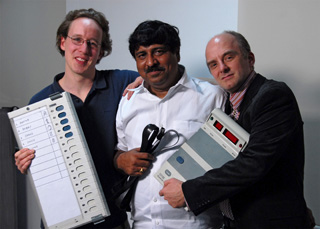

<?xml version="1.0" encoding="UTF-8"?>
<rss version="2.0"
	xmlns:content="http://purl.org/rss/1.0/modules/content/"
	xmlns:wfw="http://wellformedweb.org/CommentAPI/"
	xmlns:dc="http://purl.org/dc/elements/1.1/"
	xmlns:atom="http://www.w3.org/2005/Atom"
	xmlns:sy="http://purl.org/rss/1.0/modules/syndication/"
	xmlns:slash="http://purl.org/rss/1.0/modules/slash/"
	>

<channel>
	<title>Chronosynclastic Infundibulum &#187; election</title>
	<atom:link href="http://www.semanticoverload.com/tag/election/feed/" rel="self" type="application/rss+xml" />
	<link>http://www.semanticoverload.com</link>
	<description>The world through my prisms</description>
	<lastBuildDate>Thu, 07 Apr 2011 17:36:17 +0000</lastBuildDate>
	<language>en-US</language>
	<sy:updatePeriod>hourly</sy:updatePeriod>
	<sy:updateFrequency>1</sy:updateFrequency>
	<generator>http://wordpress.org/?v=3.5</generator>
		<item>
		<title>Hijacking Elections I.T.-Style</title>
		<link>http://www.semanticoverload.com/2010/08/22/hijacking-elections-it-style/</link>
		<comments>http://www.semanticoverload.com/2010/08/22/hijacking-elections-it-style/#comments</comments>
		<pubDate>Sun, 22 Aug 2010 20:53:22 +0000</pubDate>
		<dc:creator>Semantic Overload</dc:creator>
				<category><![CDATA[india]]></category>
		<category><![CDATA[rant]]></category>
		<category><![CDATA[democracy]]></category>
		<category><![CDATA[election]]></category>
		<category><![CDATA[electronic voting machine]]></category>
		<category><![CDATA[EVM]]></category>
		<category><![CDATA[hari prasad]]></category>

		<guid isPermaLink="false">http://www.semanticoverload.com/?p=697</guid>
		<description><![CDATA[India is no stranger to stolen and fraudulent elections. The claim was that paper ballots were vulnerable to such fraud and theft, so the Election Commission announced use of Electronic Voting Machines (EVMs). As it turns out, looks like the primary motivation for the switch to EVMs was the exact opposite. It was steal elections, [...]]]></description>
				<content:encoded><![CDATA[<p>India is no stranger to stolen and fraudulent elections. The claim was that paper ballots were vulnerable to such fraud and theft, so the Election Commission announced use of Electronic Voting Machines (EVMs). As it turns out, looks like the primary motivation for the switch to EVMs was the exact opposite. It was steal elections, and do it quietly.</p>
<p>Thanks to <a title="Floatsam: Hari Prasad" href="http://pronounce.blogspot.com/2010/08/hari-prasad.html">KM&#8217;s blogpost</a>, I was alerted to the news that H<a title="Inteview with Hari K. Prasad" href="http://www.crazyengineers.com/mr-hari-k-prasad-hacking-the-indian-evm/">ari Prasad</a>, an engineer who worked to expose the v<a href="http://indiaevm.org/">ulnerabilities of the EVM</a> has now been <a href="http://www.freedom-to-tinker.com/blog/jhalderm/electronic-voting-researcher-arrested-over-anonymous-source">arrested</a>. Despite Hari Prasad and his colleagues&#8217; evidence of the vulnerabilities in the EVM, the Election Commission of India maintains that the <a href="http://www.hindu.com/2010/08/11/stories/2010081156342000.htm">EVMs are tamper proof.</a> This despite <a title="Tehelka's investigation on EVM fraud" href="http://www.tehelka.com/story_main45.asp?filename=Op100710electronicvoting.asp">evidence</a> of rampant i<a href="http://www.keralamonitor.com/electronicvoting.html">rregularities in the 2009 elections</a>, and a growing concern about the <a href="http://en.wikipedia.org/wiki/Electronic_voting#Documented_problems">security of EVMs worldwide</a>.</p>
<p style="text-align: center;">
<div id="attachment_698" class="wp-caption aligncenter" style="width: 330px"><a href="http://indiaevm.org/authors.jpg"></a><p class="wp-caption-text">J. Alex Halderman, Hari K. Prasad, and Rop Gonggrijp</p></div>
<p>I am inclined to suspect that the Election Commission and the political parties are all in collusion to ensure that elections are rigged and done so quietly. Why else would an engineer be arrested for actually speaking the truth?</p>
<p>In fact, the EVMs are so poorly designed that the data isn&#8217;t even encrypted in the memory! Come on, even I know to design an EVM better than that! This means anyone can tap into the machine and read/write/alter the votes. Worse, you can actually attach a look-alike piece of hardware to the EVMs to alter the votes remotely through a mobile phone [For details here's the <a href="http://indiaevm.org/paper.html">full technical paper</a>]. This looks more like a feature than a bug to me. It looks like this was a deliberate decision to make it easier to sell the election results to the highest bidder.</p>
<p>Welcome to India, a country whose democracy has been bought and paid for. Anyone trying to rock that boat <a href="http://www.indianevm.com/blogs/?p=402">will not be tolerated</a>.</p>
]]></content:encoded>
			<wfw:commentRss>http://www.semanticoverload.com/2010/08/22/hijacking-elections-it-style/feed/</wfw:commentRss>
		<slash:comments>0</slash:comments>
		</item>
		<item>
		<title>U.S. may embrace Obama, Aggie racism marches on, yet</title>
		<link>http://www.semanticoverload.com/2008/11/13/us-may-embrace-obama/</link>
		<comments>http://www.semanticoverload.com/2008/11/13/us-may-embrace-obama/#comments</comments>
		<pubDate>Fri, 14 Nov 2008 02:02:24 +0000</pubDate>
		<dc:creator>Semantic Overload</dc:creator>
				<category><![CDATA[politics]]></category>
		<category><![CDATA[rant]]></category>
		<category><![CDATA[US]]></category>
		<category><![CDATA[aggies]]></category>
		<category><![CDATA[election]]></category>
		<category><![CDATA[Obama]]></category>
		<category><![CDATA[President]]></category>
		<category><![CDATA[racism]]></category>

		<guid isPermaLink="false">http://www.semanticoverload.com/?p=260</guid>
		<description><![CDATA[This happened on the evening of Nov. 4th. After Obama was pronounced as the new president of USA, a bunch of us decided to hit a near by bar for a few drinks. When we got there, we saw a bunch of Aggies with T-shirts that said &#8220;Beat the hell outta Obama&#8221;. Before I go [...]]]></description>
				<content:encoded><![CDATA[<p>This happened on the evening of Nov. 4th. After Obama was pronounced as the new president of USA, a bunch of us decided to hit a near by bar for a few drinks. When we got there, we saw a bunch of Aggies with T-shirts that said &#8220;Beat the hell outta Obama&#8221;. Before I go any further, the message on the T-shirt is not to be taken literally, or as a racist comment. It&#8217;s an old Ag tradition that started with &#8220;Beat the hell outta (University of) Texas&#8221;, and now they just change the last word to anything they want. So don&#8217;t associate this with the lynching to black men in the southern slave states.</p>
<p>So yeah, when I saw those T-shirts, I knew they were Aggies and they were Republicans. As Obama was giving his acceptence speech we started hearing comments that went something like this:</p>
<blockquote><p>He made it because the pussy liberals wanted to vote for a Muslim&#8230;</p>
<p>Looks like gold teeth and fried chicken will now be tax exempt&#8230;</p>
<p>We now have an Arab for a president. Looks like the terrorists won&#8230;</p></blockquote>
<p>And I am not making any of this up! The Aggies are notorious for their racist views, hate, and bias anyway. Patrix&#8217;s post on <a title="Egg tossing at Obama" href="http://www.ipatrix.com/egg-tossing-at-obama/">Egg tossing at Obama</a> (an incident which made it to the national news) should give you an idea of how antiquated (almost pre-integration) the Aggies&#8217; ideology is. In fact, <a title="Aggie Racism Marches on" href="../../../2008/09/02/aggie-racism-marches-on/index.html">my earlier post about Aggie racism</a> suggests an institutional investment in fostering such an environment.</p>
<p><a title="Hate stories about Obama's election" href="http://blogs.newamericamedia.org/yo/1476/the-hate-story-the-media-didnt-cover">In other news</a>: Here&#8217;s what a (University of) Texas football player Buck Brunette had to say about Obama&#8217;s election &#8220;All the hunters gather up, we have a [nigger] in the White House.&#8221; That&#8217;s what he said on his Facebook page and was promptly kicked off the team.</p>
]]></content:encoded>
			<wfw:commentRss>http://www.semanticoverload.com/2008/11/13/us-may-embrace-obama/feed/</wfw:commentRss>
		<slash:comments>0</slash:comments>
		</item>
	</channel>
</rss>
